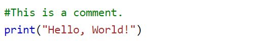
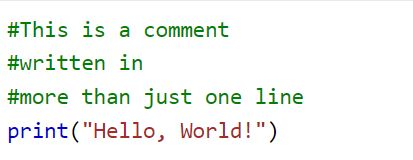

Comments can be used to explain Python code.
Comments can be used to make the code more readable.
Comments can be used to prevent execution when testing code.
Comments can be used to explain Python code.
Comments can be used to make the code more readable.
Comments can be used to prevent execution when testing code.
Comments starts with a #, and Python will ignore them

Comments can be placed at the end of a line, and Python will ignore the rest of the line
A comment does not have to be text that explains the code, it can also be used to prevent Python from executing code
Python does not really have a syntax for multiline comments.
To add a multiline comment you could insert a # for each line

Or, not quite as intended, you can use a multiline string.
Since Python will ignore string literals that are not assigned to a variable, you can add a multiline string (triple quotes) in your code, and place your comment inside it: